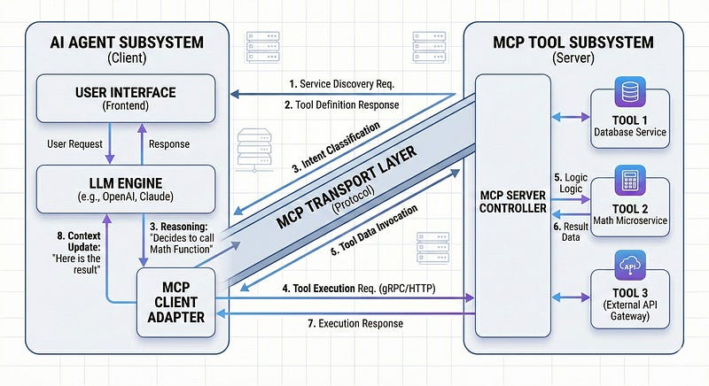

The Model Context Protocol (MCP) is quietly revolutionizing how we build AI applications.
For years, if you wanted to give an LLM access to your database or internal APIs, you had to build a monolith. You hardcoded functions into your bot, managed strict dependencies, and redeployed the entire stack every time a tool changed.
Thanks to Anthropic, MCP changes the game. It decouples the Brain (Claude, OpenAI) from the Hands (Your Tools).
But here is the catch: Most “Getting Started” guides only show you the local, command-line version using stdio transport. While that’s great for testing, it doesn't scale.
In this article, we are going to architect the production version of stateless, scalable MCP gateway using server sent events (SSE) that allows the AI agents to connect to tools over HTTP, just like a standard microservice.
The Architecture
To understand why a different architecture is required for production, it is necessary to define the three key components of the Model Context Protocol (MCP)
- The MCP Host: It is the AI application itself (e.g., Claude Desktop, IDEs, or a custom Chat UI). It controls the user experience and orchestration logic.
- The MCP Client: It is a strictly internal library inside the Host. It manages the 1:1 connection protocol, negotiates capabilities, and handles JSON-RPC message passing.
- The MCP Server: It is the external service that actually executes the tools (e.g., database queries, API calls, or computations).

The Problem
In a standard local development setup, the host typically uses the stdio transport to spawn the server as a direct child process.
- Architecture: 1 Host Process ↔ 1 Server Process.
- Constraint: Scaling this model is inefficient. Supporting 1,000 concurrent users would require spawning 1,000 separate server processes. This consumes significant memory and CPU resources, and because the connection relies on local pipes, it cannot be distributed across multiple machines.
The Solution
In a production environment (such as Kubernetes or AWS Lambda), the transport layer is switched to SSE (Server-Sent Events).
This fundamentally alters the component relationship:
- Stateless Server: The MCP Server operates as a standard HTTP microservice rather than a child process.
- Multiplexing: The client (inside the Host) connects to the server via a standard HTTP URL (e.g. https://api.example.com/sse)
- Scalability: Because the communication is standard HTTP, a load balancer (like Nginx or AWS ALB) can be placed in front of the MCP server. The Load Balancer can then distribute thousands of incoming agent connections across a cluster of stateless server instances.
The MCP server
MCP server can be built in multiple languages using the MCP SDK. Here, express is used to build the gateway.
The critical piece of engineering here is session management. Unlike a stateless REST API, MCP requires a persistent conversation channel. We can use a map (or Redis in high-scale setups) to route incoming JSON-RPC messages to the correct open connection.
import express from "express";
import cors from "cors";
import { McpServer } from "@modelcontextprotocol/sdk/server/mcp.js";
import { SSEServerTransport } from "@modelcontextprotocol/sdk/server/sse.js";
import { z } from "zod";
const app = express();
app.use(express.json());
app.use(cors()); // Essential for allowing remote clients to connect
// 1. Session Routing Table
// We map every active Session ID to its transport object.
// In production, you might use Redis for this if you have multiple pods.
const transports = new Map();
const server = new McpServer({
name: "Math-Services-Gateway",
version: "1.0.0",
});
// 2. Define Your Tools (The Capabilities)
// Notice how clean this is? The server focuses ONLY on execution.
server.tool("add", { a: z.number(), b: z.number() }, async ({ a, b }) => {
return { content: [{ type: "text", text: String(a + b) }] };
});
server.tool("subtract", { a: z.number(), b: z.number() }, async ({ a, b }) => {
return { content: [{ type: "text", text: String(a - b) }] };
});
server.tool("multiply", { a: z.number(), b: z.number() }, async ({ a, b }) => {
return { content: [{ type: "text", text: String(a * b) }] };
});
// 3. The Connection Endpoint (GET /sse)
// Clients hit this to start the "handshake".
app.get("/sse", async (req, res) => {
console.log("New Agent connected");
const transport = new SSEServerTransport("/messages", res);
transports.set(transport.sessionId, transport);
// Clean up memory when the connection drops
res.on("close", () => {
transports.delete(transport.sessionId);
});
await server.connect(transport);
});
// 4. The Message Endpoint (POST /messages)
// Clients send their instructions here. We route them to the right session.
app.post("/messages", async (req, res) => {
const sessionId = req.query.sessionId;
const transport = transports.get(sessionId);
if (!transport) return res.status(404).send("Session not found");
await transport.handlePostMessage(req, res);
});
app.listen(3001, () => {
console.log("MCP Gateway running on port 3001");
});The MCP Client
Now to experience the magic of MCP, lets not just connect to the server; but build a orchestrator.
This script demonstrates Dynamic Tool Discovery. The client doesn’t need to know what tools exist beforehand. It asks the server ‘What can you do?’ and then converts those capabilities into OpenAI’s format, and then lets the LLM decide.
import { Client } from "@modelcontextprotocol/sdk/client/index.js";
import { SSEClientTransport } from "@modelcontextprotocol/sdk/client/sse.js";
import OpenAI from "openai";
import readline from "readline";
const openai = new OpenAI(); // Assumes OPENAI_API_KEY is set
async function main() {
console.log("Booting up Agent...");
// 1. Connect to the Gateway via HTTP
// No spawning subprocesses. Just a clean network call.
const transport = new SSEClientTransport(new URL("http://localhost:3001/sse"));
const mcpClient = new Client(
{ name: "GPT-Orchestrator", version: "1.0.0" },
{ capabilities: {} }
);
await mcpClient.connect(transport);
// 2. Dynamic Discovery
// The tools are injected at runtime.
const { tools: mcpTools } = await mcpClient.listTools();
console.log(`Loaded tools: ${mcpTools.map(t => t.name).join(", ")}`);
// 3. Adapter: MCP Schema -> OpenAI Schema
const openaiTools = mcpTools.map((tool) => ({
type: "function",
function: {
name: tool.name,
description: tool.description,
parameters: tool.inputSchema,
},
}));
// 4. The Interactive Chat Loop
const rl = readline.createInterface({ input: process.stdin, output: process.stdout });
const ask = () => {
rl.question("\nYou: ", async (input) => {
const messages = [{ role: "user", content: input }];
// Step A: Let OpenAI decide intent
const response = await openai.chat.completions.create({
model: "gpt-4o",
messages: messages,
tools: openaiTools,
});
const choice = response.choices[0].message;
// Step B: If OpenAI calls a tool, execute it via MCP
if (choice.tool_calls) {
console.log(`⚡ Executing Tool: ${choice.tool_calls[0].function.name}`);
for (const toolCall of choice.tool_calls) {
const args = JSON.parse(toolCall.function.arguments);
// The Remote Procedure Call
const result = await mcpClient.callTool({
name: toolCall.function.name,
arguments: args,
});
// Feed the output back to the Brain
messages.push(choice);
messages.push({
role: "tool",
tool_call_id: toolCall.id,
content: result.content[0].text,
});
}
// Step C: Get final answer
const finalAns = await openai.chat.completions.create({
model: "gpt-4o",
messages: messages,
});
console.log(`AI: ${finalAns.choices[0].message.content}`);
} else {
console.log(`AI: ${choice.content}`);
}
ask();
});
};
ask();
}
main().catch(console.error);Conclusion
By adopting this SSE based architecture, we solved the three biggest problems of AI development
- Modularity: Developer can update your server.js with new tools (e.g., "Check Inventory"), deploy it, and the Agent instantly gains that skill without a code change.
- Security: Developer can now add standard API authentication (JWTs, API Keys) to the /sse GET endpoint.
- Observability: Because it is just HTTP traffic, developer/devops can monitor it with standard tools like grafana, datadog, or even just nginx logs.
This is how we can move from chatbot scripts to enterprise AI platforms which is relatively more scalable and reliable.